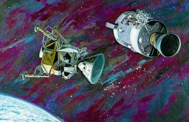
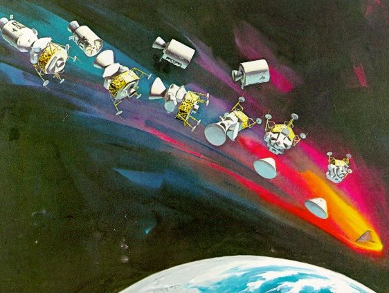
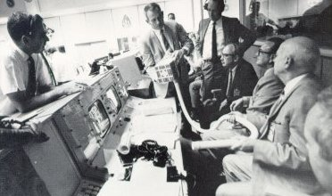

|  |
| Blast-gutted service module was set adrift from the combined command module and lunar module just four hours before Earth reentry. Mission Control had insisted on towing the wrecked service module for 300,000 miles because its bulk protected the command module's heat shield from the intense cold of space. The astronauts next revived the long-dormant command module and prepared to leave their lunar module lifeboat. |
|  |
| The jettisoning of elements during the critical last hours of the Apollo 13 mission is shown in this sequence drawing. When the lifesaving LM was shoved off by tunnel pressure about an hour before splashdown, everyone felt a surge of sentiment as the magnificent craft peeled away. Its maker, Grumman, later jokingly sent a bill for more than $400,000 to North American Rockwell for "towing" the CSM 300,000 miles. |
|  |
| Carbon dioxide would poison the astronauts unless scrubbed from the lunar module atmosphere by lithium hydride canisters. But the lunar module had only enough lithium hydride for 4 man-days - plenty for the lunar landing but not the 12 man-day's worth needed now. Here Deke Slayton (center) explains a possible fix to (left to right) Sjoberg, Kraft, and Gilruth. At left is Flight Director Glynn Lunney. |